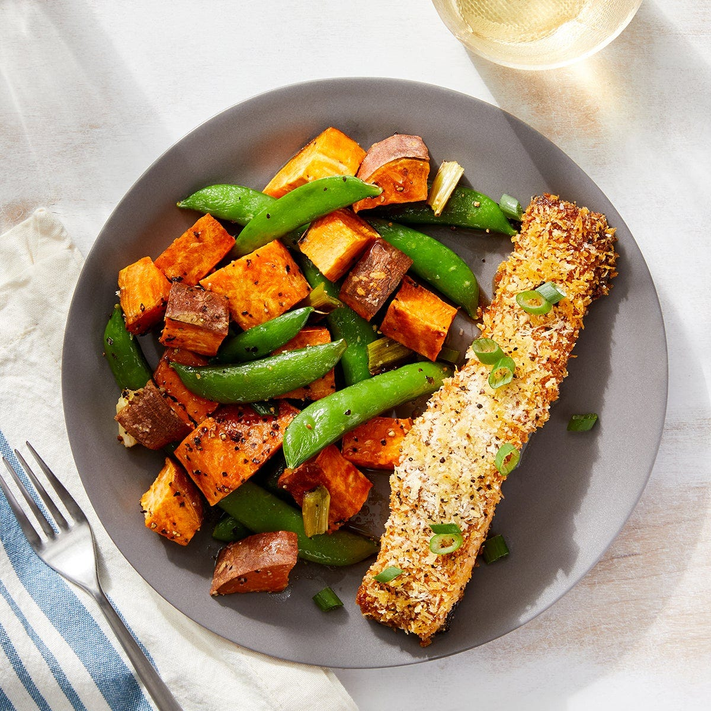

Crispy Curry-Roasted Salmon
with Ponzu-Dressed Sweet Potatoes & Snap Peas

Description
Salmon coated with a spicy yellow curry paste and creamy mayonnaise, then
topped with a sprinkle of panko breadcrumbs. Roasted in the oven to give
it a crispy crust.
Roasted sweet potatoes and sugar snap peas finished with ponzu sauce
rounds out this dish.
Prep time: 40 minutes
2 servings
740 calories
Ingredients
- 2 skin-on salmon fillets
- 1 lb sweet potatoes
- 2 scallions
- 1 lime
- 4 oz sugar snap peas
- 2 tbsp mayonnaise
- 1 tbsp yellow curry paste
- 1 tbsp sugar
- 1 tbsp Ponzu sauce
- ¼ cup Panko breadcrumbs
Steps
- Prep and make the dressing:
-
Arrange two oven racks in the upper and lower thirds of the oven, then
preheat oven to 450°F.
- Wash and dry the fresh produce.
- Medium dice the sweet potatoes.
-
Cut the white bottoms of the scallions into 1-inch pieces; thinly
slice the hollow green tops.
-
Pull off and discard the tough string that runs the length of each
snap pea pod. Place in a bowl. Drizzle with olive oil and season with
salt and pepper. Stir to coat.
-
In a bowl, whisk together the curry paste and mayonnaise. Season with
salt and pepper.
-
To make the dressing, halve the lime crosswise; squeeze the juice into
a large bowl. Add the ponzu sauce and sugar; whisk until the sugar has
dissolved.
- Roast the vegetables:
-
Place the diced sweet potatoes and prepared white bottoms of the
scallions on a sheet pan. Drizzle with olive oil and season with salt
and pepper; toss to coat. Arrange in an even layer. Place on the LOWER
oven rack and roast for 20 minutes.
-
Leaving the oven on, remove the pan from the oven. Carefully add the
seasoned peas in an even layer. Return pan to the lower oven rack and
roast 2 to 3 minutes, or until the sweet potatoes are tender when
pierced with a fork and the peas are bright green and slightly
softened. Remove pan from the oven.
- Coat and roast the fish:
-
While the veggies are roasting in the oven, place the fish on a
separate sheet pan, skin side down. Evenly top with the curry mayo,
then the breadcrumbs (pressing gently to adhere). Drizzle with olive
oil and season with salt and pepper.
-
Place on the UPPER oven rack and roast for 10 to 15 minutes, or until
browned and cooked through. Rotate the sheet pan halfway through the
cook time. Remove from the oven.
- Dress the vegetables and serve your dish:
-
Add the roasted vegetables to the bowl of dressing; toss to coat.
Taste and season with salt and pepper as desired.
-
Serve the roasted fish with the dressed vegetables. Garnish the fish
with the sliced scallion green tops. Enjoy!
Home page